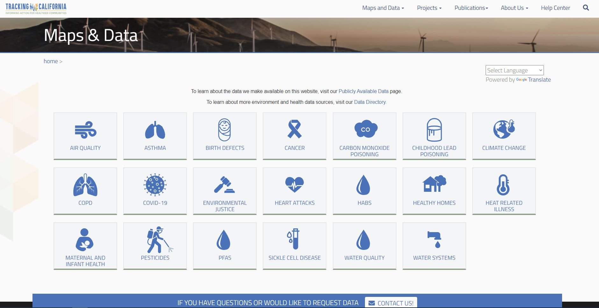
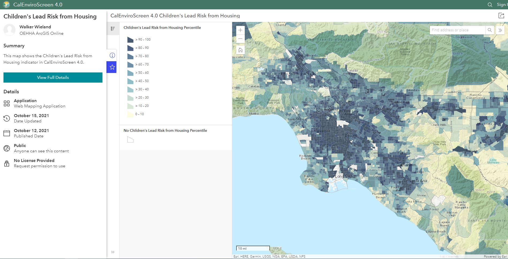
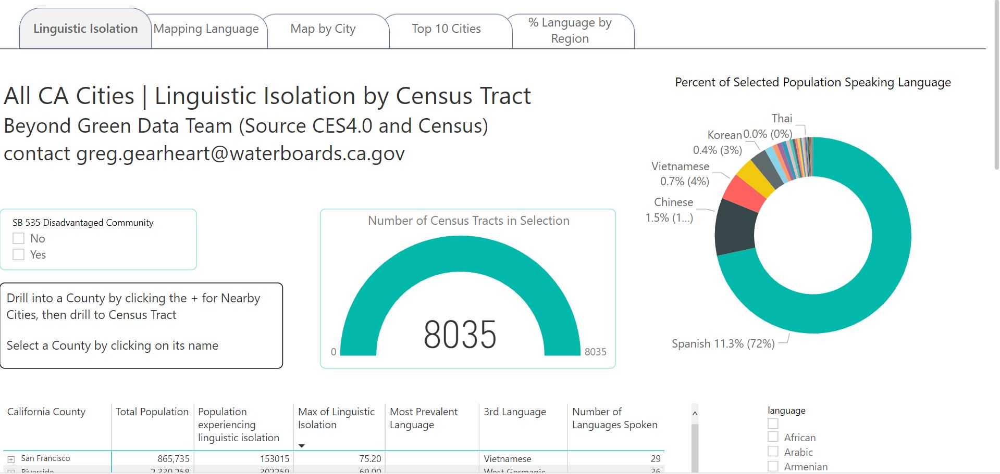

CalEPA Racial Equity Data Resources
Welcome to the Open Data Community
Product of the California Environmental Protection Agency's Racial Equity Data Team
We are a group of environmental professionals who use the best available data to explore and validate community experiences of environmental injustice. We envision this community to be an open research space investigating the data informing racial equity and environmental justice questions and solutions. Our goals include:
- Cultivating inclusive collaboration among groups interested in the intersection of data science & environmental justice
- Building online tools for the visualization & communication of environmental justice stories
- Transparent sharing of data analysis processes, which enables the reproducibility of group findings
- Serving as a data hub for environmental justice datasets
This site serves as a catalog of data resources related to racial equity and environmental justice. It is maintained and regularly updated by the CalEPA Racial Equity Team. If you’d like to suggest a resource to add or have general questions, please email us at Greg.Gearheart@Waterboards.ca.gov or Devan.Burke@Waterboards.ca.gov.
Racial Equity Data Depot
Click on each theme below to see available tools
Workforce Equity
These tools are specific to advancing equitable workforce recruitment and retention practices.
 Workforce GitHub Repository
Workforce GitHub Repository
Customize a slide deck featuring metadata and graphed demographics statewide and departmental workforce, hiring, and promotion.
 Power BI Workforce Data Visualization
Power BI Workforce Data Visualization
Deep dive into workforce demographics by employee category and classification.
 R Shiny Workforce Data Visualization
R Shiny Workforce Data Visualization
Executive overview of statewide and departmental demographics by year, with downloadable graphs.
Pollution Burden
Assess the vulnerability and cumulative impacts in different populations.
CalEnviroScreen
Mapping tool to help identify California communities that are most affected by many sources of pollution.
 Pollution and Prejudice Story Map
Pollution and Prejudice Story Map
Discover the connection between racist land use practices of the 1930s and the persistence of environmental injustice.
EJ Screen
Environmental justice mapping and screening tool developed by EPA, combining environmental and demographic indicators.
California’s Redlined Communities
Interactive application to investigate how redlined communities are still impacted by regulation and pollution burden today.
SB 535 Disadvantaged Communities Map
This map shows the disadvantaged communities designated by CalEPA for the purpose of Senate Bill 535.
Tribal Drinking Water in Mobile Home Parks
Identify mobile home parks and domestic wells on tribal lands in California.

Tracking California
Environmental health data and information available in web-based data query system, data displays, and web tools and services.
R Shiny applications for the Sacramento San Joaquin Delta
Shiny app hosted by the Delta Science program, includes: Climate Change Social Vulnerability Map & Climate Change Flood Scenarios in the Delta.
CalEnviroScreen Race/Ethnicity Analysis
Analysis of the relationship between CalEnviroScreen 4.0 results and race/ethnicity, which shows clear disparities with respect to the racial makeup of the communities with the highest pollution burdens and vulnerabilities.

Children’s Lead Risk from Housing
This map shows the Children's Lead Risk from Housing indicator in CalEnviroScreen 4.0.
California Climate Investments Priority Populations Map
This map shows disadvantaged communities and low-income communities as defined for California Climate Investments. California Climate Investments is a statewide initiative that puts billions of cap-and-trade dollars to work.
Language Access
Identify languages most spoken in areas of interest for improved outreach and community engagement outcomes.

Linguistic Isolation Tool (Power BI)
Linguistic isolation tool with options including percentage of California population’s speaking language/s, language per region, and % of language per region.
Linguistic Isolation Tool (CalEnviroScreen)
Language isolation tool showing percentage of California population’s speaking language(s).
Code for this page inspired by the RMarkdown website.